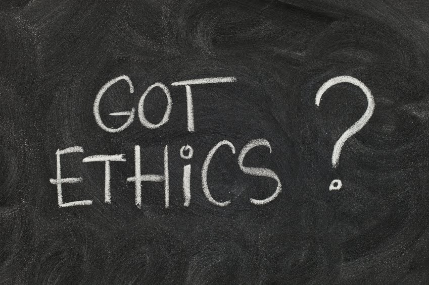

useR! 2016
The useR! conference in Stanford was awesome. Never did I expect to see so many participants (read: data geeks) and high level sponsors. For what was a little known language that’s been around in one form or another since the late seventies, this is quite amazing. Some memorable talks:
People are doing really amazing things with Shiny. I was amazed at the pervasiveness of Shiny at EA Games.
R’s superhero Hadley Whickham, never takes a break. His idea is to create a “pit of success” by having a uniform approach to import, tidy, transform, visualize, model and communicate.
Daniela Witten methodology on interpretable regression using convex penalties: as I see it, it’s an attempt to do the least damage when people want simple interpretation of non-linear coefficients.
Tal Galili gave a great presentation on heatmaps in R
Rick Beckett on 40 years of S was fascinating: now I understand why the assignment operator in R is <- (hint: jump to 0:29:00). We also learned that S and UNIX were two Bell Labs projects that grew together. Ironic how both took a while to be picked up and both grew into massively popular platforms (Linux, R).
Data-Driven Decisions
As a long-time data practitioner, I don’t get the cult-like infatuation with the term “data-driven” decisions (see here, here or here). Really folks: in the best case scenario we go from: data to evidence to decisions. If we want to go from data to decisions, hope for the best, because science may not back you up.
In health research, the term “data driven” has negative connotations. Instead, we have a much more scientifically sound **[evidence-based]*(http://en.wikipedia.org/wiki/Evidence-based_medicine)* approach.
A recent study suggests that women make better doctors than men (also here and here). There are many problems with this study. But it got me thinking of a way to explain how “data driven” can be dangerous: if women are better doctor because they treated many fewer patients than men and, therefore, had more time to spend with patients, then, the data-driven decision of having more women doctors won’t lead to improved health outcomes. But, hey, it’s “data driven”!
This echos well-known statistician Frank Harrell:
Using the data to guide the data analysis is almost as dangerous as not doing so“.
Ethics, Ethics, Ethics

The ties between statistics and ethics are well known (see here). Nearly every PhD biostatistician I know has sat on an ethics board at some points in their careers. Now, it seems that the broader field of Data Science is starting to pay attention to the ethical implications of their work. A few key events:
Unicorns
 This year has confirmed that Data Science is a wide and broad field, just like Medicine, Law or Engineering: many flavours, many specializations. Sorry folks, unicorns who are specialist in everything do not exist.
This year has confirmed that Data Science is a wide and broad field, just like Medicine, Law or Engineering: many flavours, many specializations. Sorry folks, unicorns who are specialist in everything do not exist.
Just like hospitals do not hire a family physicians and expect them to do the work of 100 specialists, just like we don’t hire a criminal lawyer when we need a tax lawyer, organizations cannot expect to hire one data scientist generalist and do the work of 100 specialists. Diversity is key.
And let’s not fall into the trap of judging a Data Scientist by the mathematical or algorithmic sophistication of their arsenals. In the words of Kahneman, we would be substituting a question which we cannot answer with a different one which we can answer.
Automation & Model Factories
Automation is really misunderstood. Really. I was pointed to Tom Davenport’s article on “Autonomous Analytics” and the concept of model factory as described in this video. It’s a great article and agree with pretty much everything. It’s what it does not say that concerns me. I commented in Tom’s article, but briefly:
- Not everything is worth automating (e.g. single points decisions)
- Not everything is automatable (causal models, explanatory models, exploratory analysis)
- Automation is more of an IT problem than a Data Science one (see Diego Kuonen’s fantastic slides on Demystifying Big Data, Data Science and Statistics). Which means it is the last mile of a repetitive insight generation process the mechanisms of which are well understood and that applies to a well understood class of problems (predictive).
Data Wrangling
Data munging/carpentry/wrangling, you know, that tedious, time consuming work that takes some 80% of a data scientist’s time is (still) not given enough credit by evangelists, vendors, consultants and speakers. Not sexy? Sure, but it’s a reality we must face nonetheless.
What’s more, is hardly automatable (see above) and the human-in-the-loop provides myriads of necessary context and judgement calls that machines cannot make. I bet this has caused a lot of misunderstanding in organizations: “What? Are you trying to tell me we spent $100K for that fancy analytics software and it’s useless?”
Analytical Maturity
If the keywords and verbiage used by organizations to advertise their data related jobs are any indication of their analytical maturity, there are promising signs! I work in the energy sector, not Silicon Valley, which means it takes a little while for us to pick up on technological or scientific innovations. For the past four years, I received weekly job alerts and, anecdotally, I can say that the expectations, clarity and keywords of the ad have improved significantly.
Analytics Podcasts
The number of really good analytics podcasts has grown significantly, to the point I can barely keep up.
Not So Standard Deviations and O’Reilly Data Show are great detox if you are subject to a considerable amount of timeshare-sque-like products and hyperbolic claims by vendors or consultants.